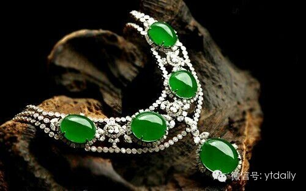
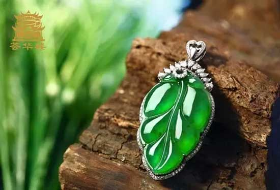

翡翠原石分为原生矿和次生矿两种。其中原生矿又可称为新坑无皮石；次生矿是指翡翠成矿后经过长期风化作用，与各种外界应力作用形成的形状各异，带皮的翡翠原料。翡翠原石常有一层风化壳。由于风化壳的存在，以致无法观察到翡翠内部。而对翡翠原石的鉴定则主要是通过观察风化壳表面出现的各种现象，推断该翡翠原石内部质量的优劣。在翡翠原石表面常出现以下现象。
(一）皮壳：绝大多数翡翠原石有风化壳，即翡翠原石在地质搬运过程中经风化作用形成的产物，称为“皮壳”。如果皮壳比较粗糙、有沙粒感的翡翠原石，称为砂皮石。根据砂皮的颜色可分为：白砂皮、黄砂皮、铁砂皮、黑乌砂皮等。
(二) 松花：“松花”是指翡翠皮壳上绿色的表现，也就是翡翠内部或浅层绿色在皮壳表面的一种表现。由于致色离子的种类、浓度和空间分布在一定的成矿时间和空间是相对稳定的，所以根据松花颜色的浓淡、数量的多少、形态的变化，可以推断翡翠内部颜色的变化和分布。如果松花的颜色浓而鲜艳，价值就会高；如果翡翠皮壳上没有松花，内部可能很少会有色；而皮壳上多处有松花，则内部可能存在颜色或者仅仅存在于表层。另外，松花是否渗入翡翠内部，渗透的深度等，也是推断颜色好坏的依据之一。
(三) 蟒：“蟒”是描述翡翠原料的术语，是指翡翠中的绿色条带在风化壳的表现形态。一般呈凸起的曲折细脉状分布在风化壳表面，犹如一条蟒蛇盘卷，是判断有无颜色及颜色分布状态的一种依据。翡翠的成岩成矿有着不同的世代，形成了结构、成分上的差异，这就导致了硬度不同，在风化过程中产生差异风化
(四）雾：“雾”是指存在于外层风化壳与内部翡翠之间的一层雾状不透明物质(见图 3-2-23)，实际上是一种硬玉矿物退变质作用结果。由于温度的降低及压力的增加，原生矿物硬玉发生退变质，形成新的次生矿物包裹在硬玉岩外部，形成了中心部分是硬玉岩，外面是次生矿物层，最外层是风化壳的格局。
(一）观察“翠性”和结构：“翠性”多出现在粒状纤维交织结构中，在白色团块状的“石花”或“石脑”附近较易观察。矿物颗粒越粗大“翠性”越明显，颗粒细腻越不易观察。颗粒较粗的抛光良好的翡翠表面常出现“微波纹”。这是由于长柱状、束状略具定向分布的硬玉颗粒间硬度差异所造成的，是翡翠内部结构的外在反映。 在阳光或灯光下，借助反射光在翡翠的表面寻找“翠性”以及“微波纹”；在透射光下注意观察翡翠特有的(粒状)纤维交织结构。
(二)颜色：翡翠的颜色丰富多彩，不仅要观察颜色的色调，也要注意观察颜色的组合和分布(俗称“色根”)，是否为翡翠的正常颜色，是否是翡翠经常出现的颜色，以区别于其他相似玉石；还要观察颜色的分布，是否呈丝网状、沿微裂隙分布，以此来判断颜色为原生还是次生或经人工染色所致。
(三) 光泽：翡翠具有较高的折射率和较高的硬度，所以其光泽强于其他相似玉石。
(四）密度：翡翠的密度为 3．33g／cm 3 左右，大于多数绿色玉石。
(五) 折射率：点测法翡翠的折射率为 1．66 左右。很少与其他玉石折射率相混。
与翡翠相似的其他玉石主要有：软玉、蛇纹石玉、石英质玉石、水钙铝榴石、钠长石玉等。
(一) 软玉：与翡翠相比，软玉具典型的毛毡状结构，颗粒更为细小，外观更为细腻，油脂光泽，无 “翠性”，颜色分布均匀。此外密度、折射率、吸收光谱也与翡翠完全不同。 软玉在缅甸和云南地区又称为“昆究”。
(二) 蛇纹石玉：蛇纹石玉的绿色以黄绿色为主，色较浅淡，均匀。蜡状至玻璃光泽，硬度、密度、折射 率均低于翡翠，无星点状闪光。蛇纹石玉与翡翠同为纤维交织结构，但前者的结构更为细腻， 不易观察，以此可以与翡翠相区别。
(三)石英岩：常见的石英岩为无色，也有些石英岩为浅绿色。石英岩的特点是粒状结构，无“翠性”， 密度、折射率均低于翡翠。含有铬云母的东陵石在石英颗粒之间有绿色铬云母呈片状闪光， 并且在滤色镜下变红，以此区别于翡翠。 染色处理的石英岩俗称“马来玉”，绿色染料沿颗粒之间呈网状分布，吸收光谱可具明 显的 650nm宽吸收带。
(四)玉髓：绿色玉髓又称为澳玉，为隐晶质集合体。颜色均匀，为典型的苹果绿色。密度、折射率 均低于翡翠。
翡翠的优化处理方法可分为两类。优化的方法主要有：浸蜡和热处理，这种优化处理过的翡翠与未经处理的天然翡翠一样，可以视为“A 货”翡翠；处理的方法主要有：漂白、浸 蜡，漂白、充填等，这种优化处理的翡翠俗称“B 货”翡翠，而染色处理的翡翠则俗称“C货”翡翠。
(一) 热处理 1.目的 加热的目的是促进氧化作用的发生，使黄色、棕色、褐色的翡翠转变成鲜艳的红色。 2.方法 将体积相近的翡翠清洗干净后放在炉中加热。样品最好包上，悬空吊在炉中。升温速度 要缓慢，当翡翠颜色转变为猪肝色时，开始缓慢降温，冷却之后翡翠就呈现红色。为获得较 鲜艳的红色，可进一步将翡翠浸在漂白水中，氯化数小时，以增加它的艳丽程度。 3.耐久性 与天然红色翡翠具有同样的耐久性。 4.鉴定特征 因为与天然红色翡翠的形成基本相同，所不同的是通过加热加速了褐铁矿失水的过程， 使其在炉中转变成了赤铁矿。从外观而言，天然红色翡翠稍微透明一些，而加热的红色翡翠 则有干的感觉。经热处理的翡翠其基本性质与天然翡翠基本相同，常规方法不易鉴别。 通过红外光谱仪进行鉴别可以看出，天然翡翠在 1500～1700cm -1 、3500～3700cm -1 附近 表现出较强的吸收区，为结晶水和吸附水的吸收区；经热处理的红翡翠在上述两个位置没有 强的吸收区，说明烧制翡翠中没有水的存在。
(二) 浸蜡 1.目的 掩盖翡翠的裂纹，增加透明度。 2.处理方法 将翡翠成品放人蜡的液体中，稍稍加温、浸泡，使蜡的液体沿裂隙和微小缝隙渗入，再 抛光后可增加透明度，掩盖原有缝隙。 3.耐久性 这种处理方法只是暂时掩盖了较为明显的裂纹，增加了光的折射和反射能力，同时使透 明度有所提高。如果遇到高温会使蜡质溢出，耐久性差。 4.鉴定特征 浸蜡处理是翡翠加工中的常见工序，轻微的浸蜡处理不影响翡翠的光泽和结构，属于优 化。严重浸蜡的翡翠缓慢地在酒精灯上加热可使蜡溢出。在紫外荧光灯下可能见到蓝白色荧 光。有机物峰明显，具有 2854cm-1、2920cm-1 特征谱。
Reference: 详见百度文库